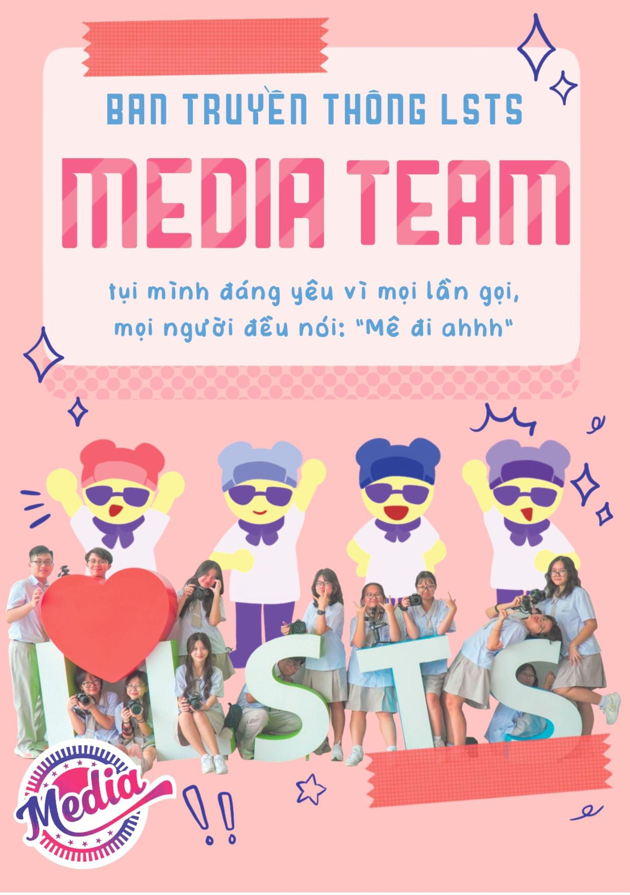
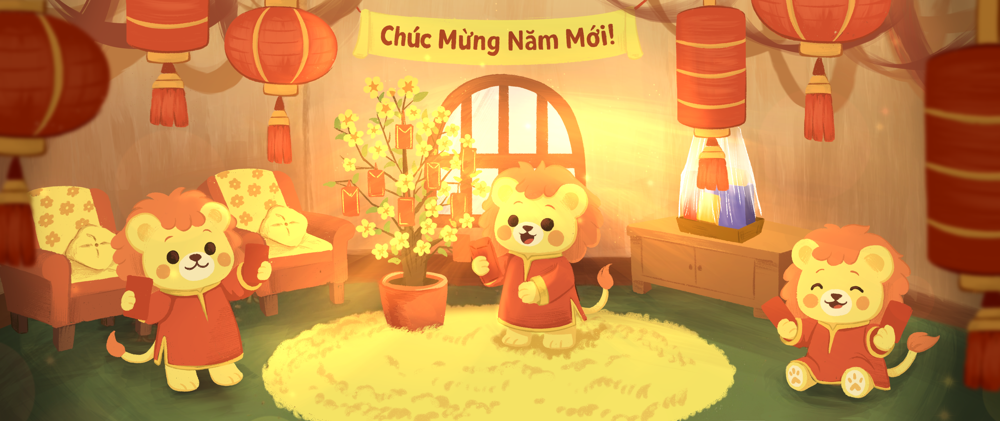
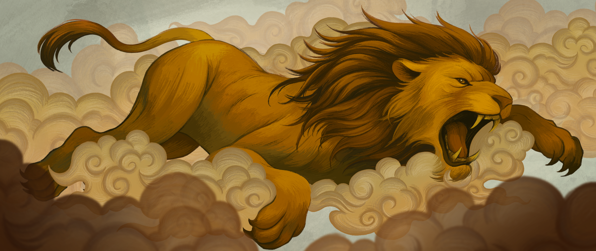
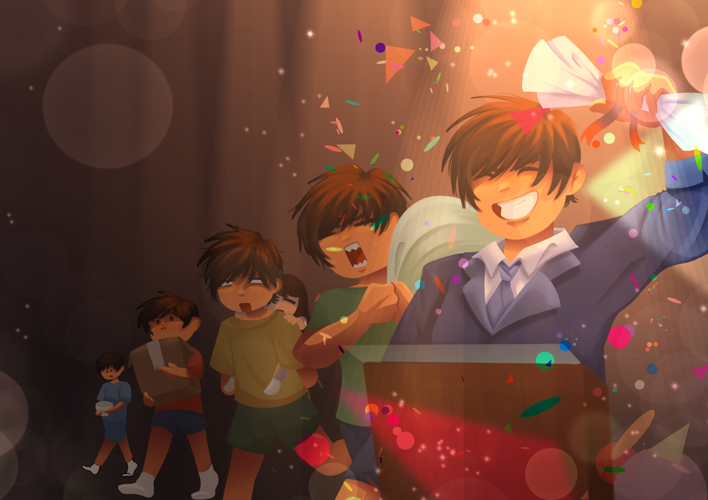
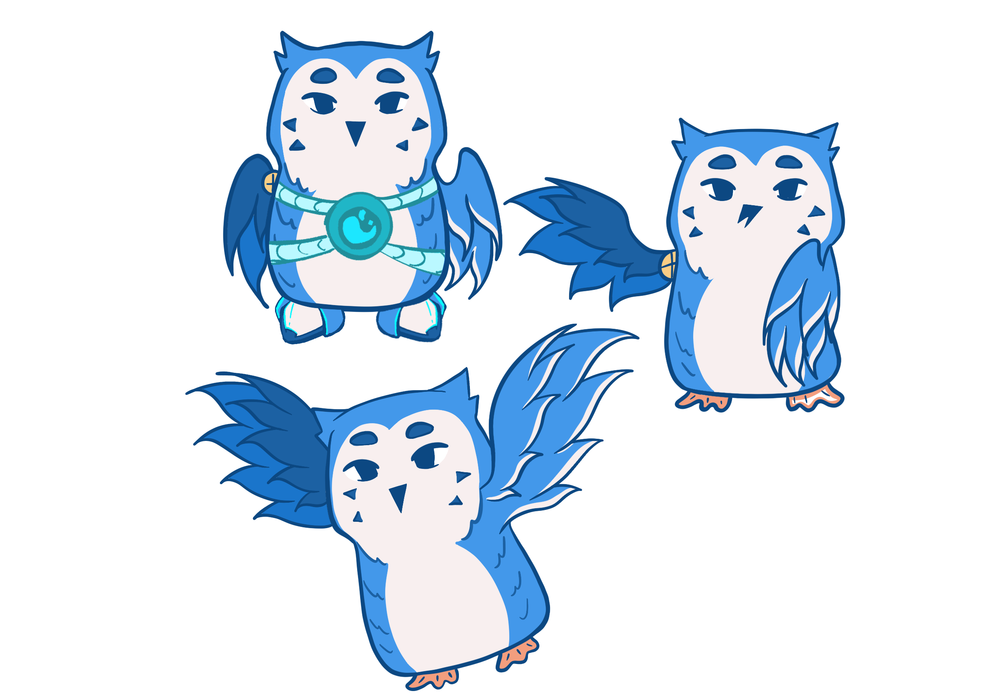
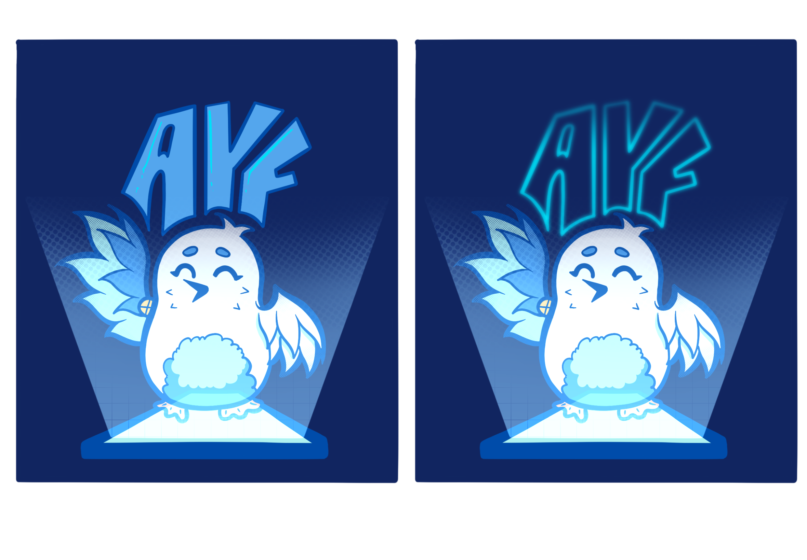
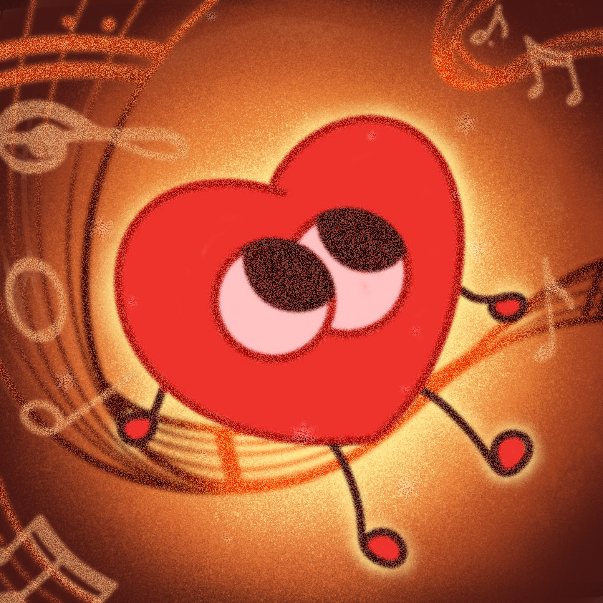
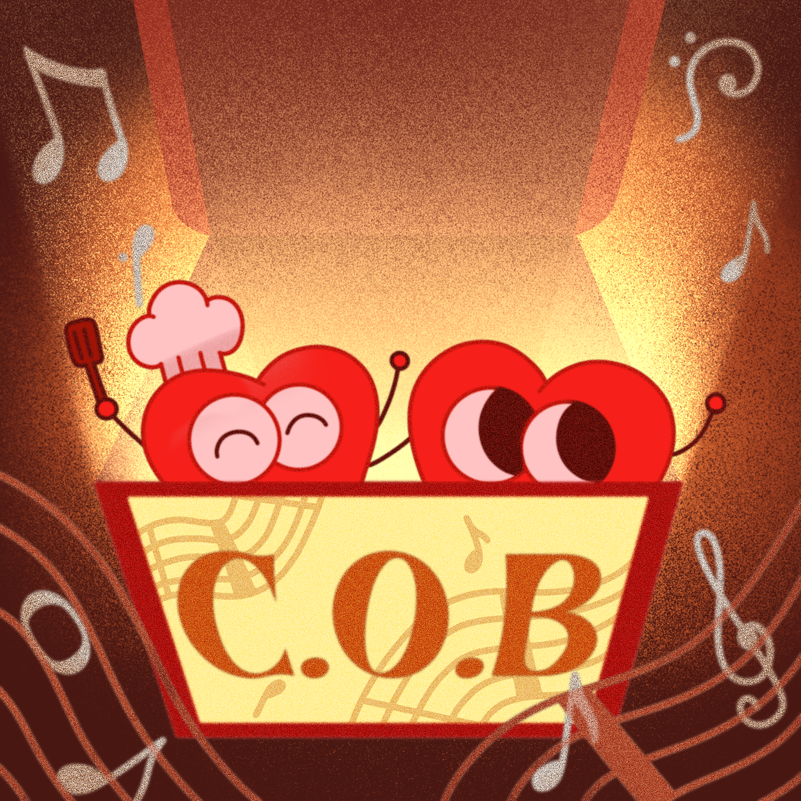

Media
Media was my first real experience working in a creative team within school. As part of the design team, I created digital promotional posts and short 2–3 minute animations for the school’s official platforms.
This experience taught me how to communicate visually under constraints—balancing aesthetics with clarity, deadlines, and audience engagement. It also introduced me to collaborative production pipelines and strengthened my foundation in motion design.

Yearbook
Working on the school yearbook played a major role in shaping my technical skills as a designer. I was responsible for designing page backgrounds, editing and enhancing images, and handling page layouts.
Through this project, I became proficient in Adobe Photoshop and learned how to retouch images, correct visual inconsistencies, and build layouts that felt both organized and visually engaging. More importantly, it taught me how design can guide the viewer’s attention and shape the way stories are presented.


MAC
MAC was a school project created to promote the newly introduced house system through podcast content and digital media.
My contribution focused on animating transition elements and creating visual assets to support the overall presentation. Although relatively small in scale, this project helped me better understand how motion can enhance pacing and viewer engagement.
2025 — 26
Treasure Committee
As part of Treasure House’s organizing committee, I worked in the design team to create promotional content for events and activities.
I designed social media posts, announcements, and campaign visuals primarily for Instagram. This role strengthened my ability to design with branding consistency while adapting visuals for different event themes.


The Renewal
The Renewal was a small school initiative where I contributed as a designer for promotional materials.
My work focused on creating visual posts for Facebook to help communicate the project’s identity and attract engagement. Though brief, it further developed my confidence in visual communication.

Khoi Sac
Khởi Sắc was one of the most memorable large-scale productions I worked on—a yearly musical/show organized by 12th-grade seniors.
I was invited by a senior I previously worked with in Media to become the lead animator for the show’s background visuals and animated transitions. This project pushed me creatively and technically, requiring me to think about timing, atmosphere, and how visual movement supports live performance.
It was one of my first experiences realizing how animation could shape emotional storytelling on a larger scale.
Colorful KNS
Colorful KNS was a school activity centered around life skills education for 11th graders.
I contributed through animation and promotional design, creating visuals that were energetic, approachable, and engaging for students. This project strengthened my adaptability in designing for different audiences and purposes.
ACES DeMai
ACES DeMai is one of the most meaningful projects I have ever been part of.
Together with four peers, I co-founded this initiative to support children affected by HIV. Our goal was not simply to raise awareness, but to challenge stigma and encourage people to see these children beyond the labels society places on them.
We organized group activities where we spent time talking with the children—learning about their dreams, aspirations, and how they saw the future. From these conversations, we transformed their dreams into visual artworks by reimagining and illustrating them.
These artworks were later showcased in a public exhibition at Đường Sách Thành phố Hồ Chí Minh.
This project deeply changed my perspective on art.
I realized that art is not only a tool for self-expression—it can also become a bridge between people. Through illustration and storytelling, we gave visibility to voices often overlooked and reminded viewers of something simple yet powerful: these children are not defined by HIV; they are human, with dreams, hopes, and futures worth believing in.
ACES DeMai reinforced my belief that visual storytelling can create empathy, challenge prejudice, and spark meaningful dialogue.

Asian Youth Forum
The Asian Youth Forum is an international youth initiative held in a different Asian country each year, bringing together young people across cultures.
I had the opportunity to contribute as one of the merchandise designers. Although my role was focused on design, being involved in an international project exposed me to cross-cultural collaboration and broadened my perspective on design communication.


ACES COB
ACES COB is a fundraising initiative supporting children with heart conditions through music-based events and performances.
My role focused on concept development and design direction. Although I was unfortunately unable to participate until the final stages due to internal challenges, the project still reinforced something important to me: creative skills carry responsibility, and design has value not only aesthetically but socially.


What Was Always There
What Was Always There represents the culmination of my artistic growth so far.
This portfolio is deeply personal—a reflection of my identity, experiences, and creative philosophy. It explores memory, emotion, and the invisible layers beneath what we see on the surface.
More than a collection of work, this project is a dialogue between my inner world and the visual language I have spent years developing.
It is both a portfolio and a statement of who I am as an artist today.